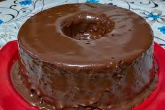

Receita de Bolo de Chocolate
Ingredientes
- 2 xícaras de farinha de trigo
- 1 e 1/2 xícara de açúcar
- 3/4 xícara de cacau em pó
- 1 e 1/2 colher de chá de fermento em pó
- 1 e 1/2 colher de chá de bicarbonato de sódio
- 1 colher de chá de sal
- 2 ovos
- 1 xícara de leite
- 1/2 xícara de óleo vegetal
- 2 colheres de chá de extrato de baunilha
- 1 xícara de água fervente
Modo de Preparo
- Preaqueça o forno a 180°C.
- Em uma tigela grande, misture a farinha, o açúcar, o cacau, o fermento, o bicarbonato e o sal.
- Adicione os ovos, o leite, o óleo e o extrato de baunilha. Misture até obter uma massa homogênea.
- Acrescente a água fervente (a massa ficará bem líquida, mas é assim mesmo!).
- Despeje a massa em uma forma untada e enfarinhada.
- Asse por cerca de 30-35 minutos ou até que um palito inserido no centro saia limpo.
- Retire do forno, deixe esfriar e desenforme.